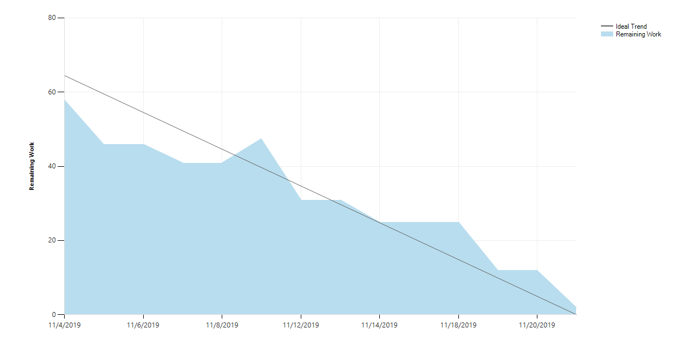

The project management aspect of the project started as early as the introductions to the projects were made. As a team, we made high-level estimates of the projects using the table-top method, where we placed the different projects’ complexity relative to one-another. This gave us the list of projects, ordered by size.
The work items to be completed for a project are kept in the product backlog in order to track and organize user stories. From there, some are selected to be completed in the upcoming sprint, and are moved to the sprint backlog in order to track progression throughout the sprint. A copy of our product backlog is found here.
The sprint planning meeting is attended by the development team and the stakeholders and serves to plan the upcoming sprint. The planning consists of selecting user stories from the product backlog and prioritizing them in the sprint backlog considering how much work could be done.
The purpose of a burndown chart is to track the current progression of the sprint along with the ideal progression of the sprint, whose rate is the estimated hours for the sprint divided by the length of the sprint. An example of a burndown chart, featuring our first sprint is shown below.

The x-axis represents the duration of the sprint, while the y-axis represents the remaining hours. Ideally, the remaining hours will reach 0 at the end of the last day of the sprint. Whenever it doesn’t happen, the burndown can be used as a future reference to make more accurate estimates while letting us know if we are on track for our commitments.
The Team Foundation Server is used to track hours put into individual tasks. This is done by assigning a time estimate to each task, and updating it as progress on it is made.
Using TFS for the purpose of time tracking provides the benefit of reflecting progress in the burndown chart and provides convenient integration in development tools. Additionally, it provides traceability and insight into what code is checked in and to which tasks it is related.
Each day of the sprint begins with a scrum meeting, where each team member answers three questions:
We did not strictly adhere to keeping the meetings free of technical details, as it became the most convenient time to discuss and decide upon architectural decisions. In my opinion, this was for the best, but only due to our small team size. We had no problems with it.